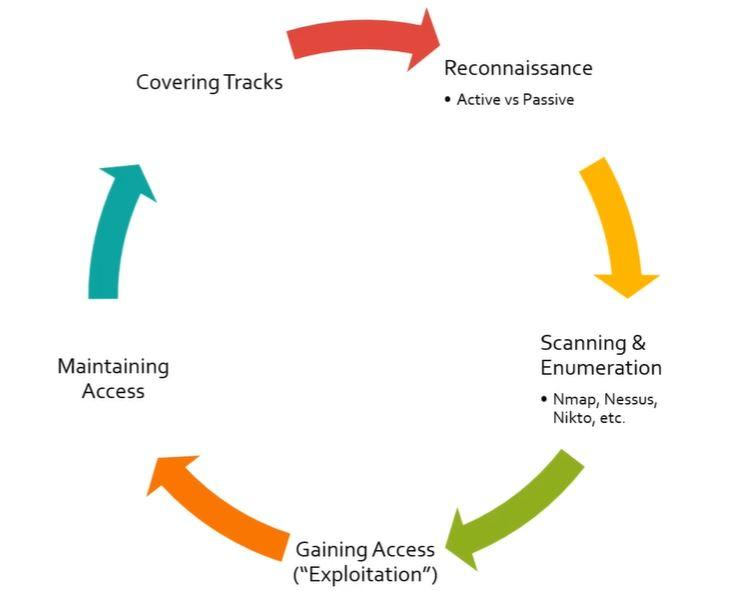

The five stages of Ethical Hacking :-
- Reconnaissance (i.e Active vs Passive)
- Scanning & Enumeration (i.e. Nmap , Nessus , Nikto , etc.)
- Gain Access (i.e. Exploitation)
- Maintaining Access
- Covering Tracks

So what is Reconnaissance ?
- This stage is also called as information gathering. And it has 2 different types (i.e. Active & Passive).
- Passive is like going out to google and search client details on twitter , linkedin and we are not doing anything active there
as we are not doing anything on the client website.
- Active Reconnaissnance kind of falls with the second phase and scan actively using tools to find open ports , vulnerability and different items as what returns on this result of
when we do the scanning.We also perfom what is called enumeration.
So what is Scanning & Enumeration ? (i.e. Nmap , Nessus , Nikto , etc.)
Enumeration is just looking at some item and digging into to them to see if we can find out anything of value.
Eg. If a web server is running on port 80 and we see if port 80 is open and running a patchy 1.2 which is really really outdated.
And then we will google and see if patchy 1.2 has any exploits for it and we will do research.
So what is Gain Access (i.e. Exploitation)
One we have gather the information and done with the scanning & enumeration part than comes the ganing access part.
Here will run the exploit against the client or against the vulnerable service to gain the acccess into a machine or network or environment etc.
What is Maintaining Access ?
And once we have that acccess the proccess start to repeat we do scanning & enumeration again and we also want to maintain that access.
eg. If we got kicked out once the user has shutdown the machine how do we maintain the access once the user has turn the machine back on.
What is Covering Tracks ?
Want to delete any logs that we leave behind or delete any kind of malware that we upload which is more important as a pentester.
Any accounts we had create for any reason and want to delete those as well.
We really want to clean up